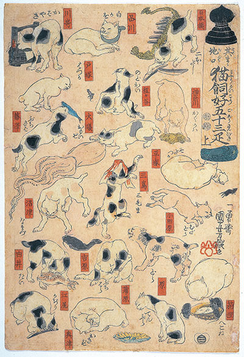
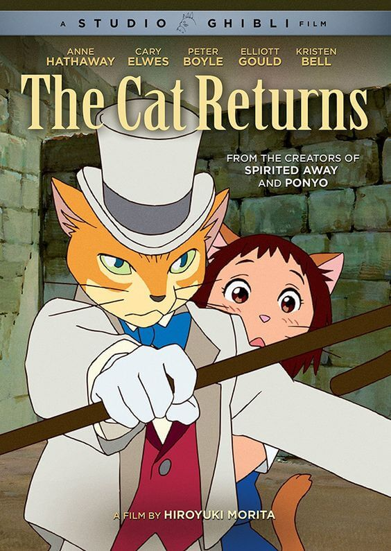

June’s Topic: Cats in Animations and Illustrations.
Throughout Tokyo and Japan, there is an extensive collection of art that includes cats. From the Edo era to modern street art, cat imagery can be seen all over Japan, make it an ideal destination for cat lovers.

In the modern day, cats continue to be the inspiration for artists and animators like Ghibli Studio.
We can see cats everywhere in Japan: Mascots, cartoon and comic characters, etc. One very famous Cat
comic character is Pusheen - a chubby cute grey cat living her best life with her friends.


A mysterious Japanese artist, who goes by the pseudonym of Ariduka55 or Monokubo on social media channels, creates otherworldly beautiful drawings that breathe life into a completely new fantasy world where giant animals live and evolve alongside humans. Monokubo is a 24-year-old artist from Japan who got an idea of giant animals from Studio Ghibli's anime movies and their famous characters. "It came from "Princess Mononoke" and "Totoro."